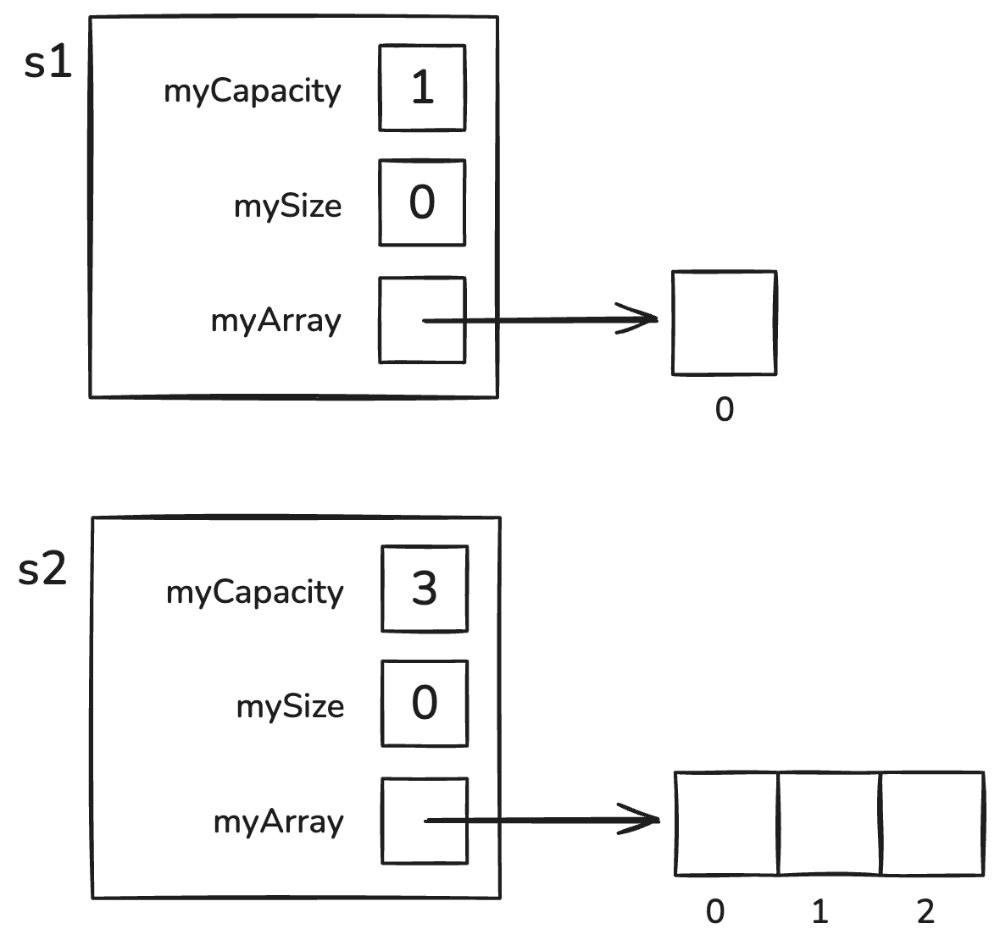
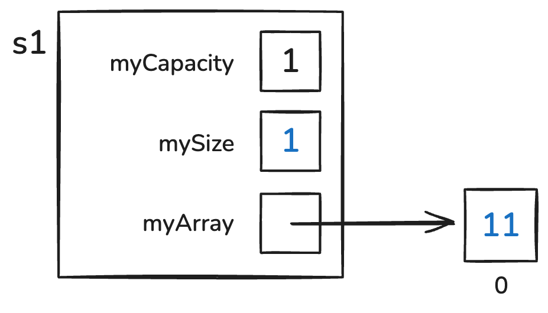
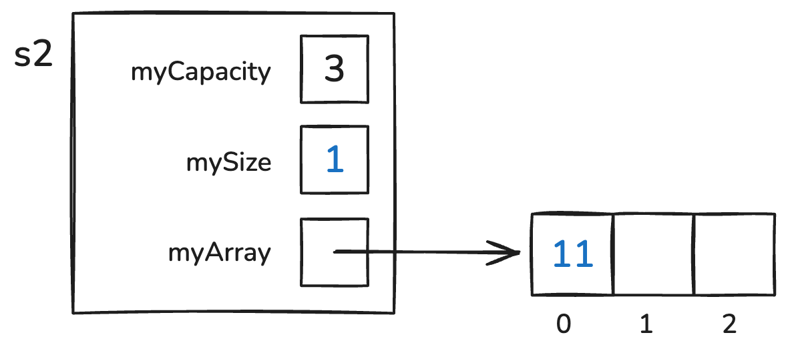
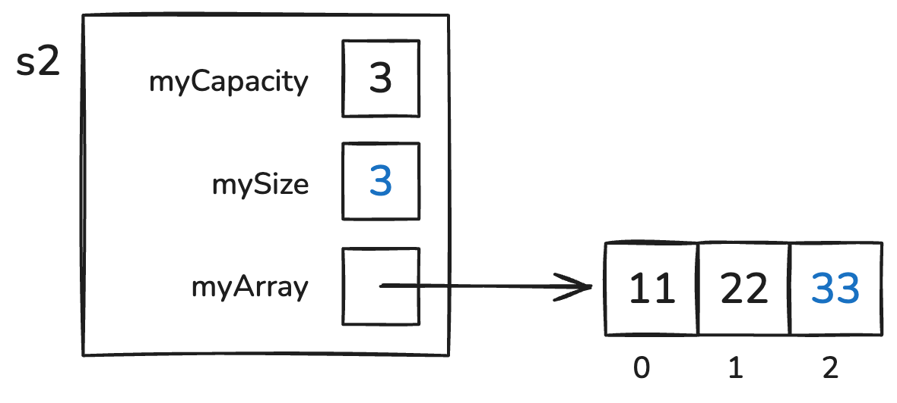

Lab 09: Stacks and Exceptions and Queues
Objectives:
In this exercise, you will:
- Build a dynamically-allocated-array-based Stack class.
- Build a simple Exception class hierarchy.
- Throw and catch exceptions.
- Build a Queue class that uses a linked list.
Introduction
Today’s exercise has two parts:
- In Part I, we will build a simple Stack class that stores its items in a fixed-size, dynamically-allocated array.
- In Part II, we will see how to define, throw, catch, and handle exceptions.
- In Part III, we will build a simple Queue class that stores its items in a linked list.
Getting Started
Accept the invitation to the lab and do git clone to get the files, as usual. Make sure your partner is part of the same Team and edit the README.md file and share your repo on github.com
Part I: The Stack Class
As you can see, this Stack class contains three instance variables:
unsigned myCapacity;
unsigned mySize;
Item* myArray;We will be storing the address of a dynamically allocated array in myArray. We will be storing the length of that array in myCapacity, and in mySize, we will be storing the number of items in the array. As we shall see, this value will correspond to the index of the spot in that array where the next Item that we push() will be stored.
As we have seen in class, the primary Stack operations are:
bool isEmpty(), that returns true if and only if the Stack contains no items;bool isFull(), that returns true if and only if the Stack has no room for more items;void push(Item it), that places it on top of the Stack;Item peekTop(), that returns the top item from the Stack (without modifying the Stack); andItem pop(), that removes and returns the top item from the Stack.
To let you focus on these Stack operations, the Stack class already contains prototypes and definitions for:
- an explicit-value constructor;
- a copy constructor;
- a destructor; and
- an assignment operator.
Take a few minutes to look these over. Look carefully at the explicit-value constructor, and note the initial values each member is given. We might visualize the Stack objects it constructs as follows:

Take a minute to look over tests.cpp to see the tests it contains. Note that part of the test is commented out. Leave this part commented out for now; we will be uncommenting it in Part II.
Build the project (make all) and run tester (./tester). Verify that everything works correctly at the outset.
The isEmpty() Method
Our explicit constructor gives us the ability to define Stack objects with a given capacity. Since these Stack objects are initially empty (i.e., they contain no items), the first operation we will build is the isEmpty() method.
In tests.cpp, uncomment the TEST_CASE that tests isEmpty(). Compile and run the test. You should see an error message indicating that isEmpty() does not exist.
In Stack.h, add a prototype for isEmpty() to the class. Recompile and rerun. You should now see a linking error, since isEmpty() has been prototyped but not defined.
In Stack.cpp, add a definition for isEmpty() that will pass the tests. This definition should be as simple as possible (e.g., a single line). If you get stuck, here is a hint, but don’t use it unless you have to.
Recompile and rerun your test. Continue when you pass the test.
The push(), peekTop(), and isFull() Methods
The other operations only work correctly on a non-empty Stack, so before we can test them, we need to be able to add items to a Stack. Since the push() method allows us to add items to a Stack, we will build that method; and since pushing items onto a stack can fill it, we will also build the isFull() and peekTop() methods.
In tests.cpp, uncomment the TEST_CASE that tests testPushPeekTopAndIsFull(). Take a moment to look over the tests it contains. The first test constructs a stack with capacity 1 and pushes an item onto it. We might visualize this stack as follows:

The second test constructs a stack with capacity 3 and pushes an item onto it. We might visualize this stack as follows:

The test then pushes a second item onto the stack:

The test then pushes a third item onto the stack, filling it:

Compile and run the test. You should see error messages indicating that push(), peekTop(), and isFull() do not exist.
In Stack.h, add a prototype for isFull() to the class. Recompile. Next, add a prototype for peekTop() to the class. Recompile. You should now see just the error for push(). Add a prototype for push(); then recompile. You should now get only linking errors, since isFull(), peekTop(), and push() have been declared in Stack.h but not defined.
In Stack.cpp, add a definition for isFull(). This definition should be as simple as possible (e.g., a single line).
Save/compile, and verify that the linking error for isFull() goes away. (The errors for peekTop() and push() should still be there.)
Define the peekTop() method. Save/recompile, and verify that what you have written compiles without errors. (You should still see a linking error for push().) Note that you do not have to handle the case (now) when you try to peekTop() on an empty Stack.
Define the push() method. Save/recompile, and verify that what you have written compiles and links without errors. (Again, do not worry about exceptional cases, yet.)
Run the tests. If you pass the tests, congratulations! If not, use the diagrams above to go back and fix your push(), peekTop(), and/or isFull() methods. If you get stuck, here are hints for push(), peekTop(), and isFull(), but only use them if you have to.
Continue when your methods pass all the tests.
The pop() Method
Our sole remaining operation is the pop() method, that removes and returns the top value from the Stack.
In tests.cpp, uncomment the TEST_CASE for testPop(). Compile and run the test. You should see an error message indicating that pop() does not exist.
In Stack.h, add a prototype for pop() to the class. Recompile and rerun. You should now see a linking error, since pop() has a prototype but no definition.
In Stack.cpp, add a definition for pop() that will pass testPop(). For now, this definition should be as simple as possible (e.g., it can be as short as a single line). If you get stuck, here is a hint, but don’t use it unless you have to.
Recompile and rerun your test. Continue when you pass the test.
Part II: Exceptions
We now have a working Stack class, but it is lacking any error-handling capability. For example, what happens if a person pops an empty stack, or pushes an item onto a full stack? In Part II of today’s exercise, we introduce C++’s programmer-defined exception mechanism, which provides a graceful way of handling such problems.
As we have seen with the C++ standard exceptions, an exception is an out-of-the-ordinary occurrence. The C++ standard exception classes in <stdexcept> are necessarily very general, describing broad categories of things that might go wrong. When you want to more precisely indicate what is going wrong, C++ lets us create our own exception classes.
In C++, a method that wants to indicate that something exceptional has occurred can throw an exception object back to the caller of the method. The pattern for the throw statement is:
throw ExceptionType(arguments);This constructs an exception object of type ExceptionType and throws it to the caller – the subprogram that invoked the currently running method, terminating that method.
Back in the caller, the call to that method can be “wrapped” in a try-catch block, whose form is as follows:
try {
// risky code -- might throw an exception
} catch (const ExceptionType & exceptionParameter) {
// handler code -- to be executed if the exception occurs
}The try block tries to perform the “risky code”. If that code works without throwing the exception, control skips past the catch block to whatever follows it. But if the “risky code” throws the exception named in the catch, then control is transferred to the “handler” code in the catch block, which does whatever is appropriate.
Note that since ExceptionType is pretty much always a class, it is preferable to define the catch block’s parameter as a const-reference parameter. This has two advantages over using a value parameter: (i) it avoids the copying associated with a value parameter, and (ii) it lets this catch block catch exceptions of this exception-class or any subclasses derived from that class. We make it a const reference (i.e., read-only reference) parameter because the catch block should not make any changes to that parameter.
Catching Exceptions
In tests.cpp, uncomment the following line in TEST_CASE "testPop()":
REQUIRE_THROWS_AS(s1.peekTop(), StackException);This block tries to send the peekTop() message to an empty stack, and then catches the exception that should be thrown.
Save/recompile your project. You should get several errors, because StackException has not been defined. Verify that that is the cause of your errors, then continue.
The StackException Class
One way to provide exceptions for our Stack class is to define a separate StackException class that our Stack class can use when something goes wrong. Inspect the file StackException.h which contains such a class.
The class has two instance variables:
myLocation, to which a method can pass its name (to indicate the exact method in which something went wrong); andmyMessage, to which a method can pass a description of what is wrong.
The StackException constructor initializes these members using values it receives through its parameters. For example, if at the beginning of the pop() method, we find that the stack is empty, we can build an exception like this:
StackException("pop()", "stack is empty")(don’t do this yet in your code)
If at the beginning of the the push() method, we find that the stack is full, we can build an exception like this:
StackException("push()", "stack is full")The asString() method generates a string representation of these values, accompanied by some descriptive labels.
At the bottom of StackException.h, there is a definition of operator<< that lets us output a StackException using the usual C++ stream-insertion operator.
At the beginning of Stack.h, uncomment the #include directive that includes StackException.h.
After making these changes, save/recompile your project. If all is well, your project should compile correctly (but not run correctly yet). If not, find and correct the syntax error(s).
When your project compiles correctly, run it. You should see an execution halt in the "testPop()" test case. The problem is that our testPop() method now expects a StackException to be thrown when we send the peekTop() message to an empty Stack. Continue, and we will see how to accomplish this.
Throwing Exceptions
Now that we have created a StackException class by which we can precisely describe unusual circumstances, we can use that class in our Stack methods. As mentioned previously, a method that detects a problematic circumstance can throw an exception. For example, if the stack is empty, there is no top item for the peekTop() method to return, in which case we might make it throw a StackException, as follows:
Item Stack::peekTop() const {
if (isEmpty()) {
throw StackException("peekTop()", "stack is empty");
}
return myArray[mySize - 1];
}Make the changes seen above. Recompile and rerun your project. With these changes, what you have written should pass all the tests. Continue when it does so.
The Explicit-Value Constructor
Uncomment the REQUIRES_THROWS_AS code in the “constructors” test case. Then save/compile your project. Run it, and verify that it fails.
Using what we did with peekTop() as a model, modify the Stack constructor so that if capacity is not a positive number, the constructor throws a StackException with the message Stack(capacity): capacity must be positive!.
Continue when your project passes all tests.
The pop() Method
Uncomment all the rest of the REQUIRES_THROWS_AS tests in the “testPop()” test case. Then save/compile your project. Run it, and verify that it fails.
Using what we did with peekTop() as a model, modify pop() so that it throws a StackException with the message pop(): stack is empty!. In case you get stuck, here is a hint, but don’t use it unless you need to. Continue when your project passes all tests.
The push() Method
Our final operation is the push() operation. Uncomment the REQUIRE_THROWS_AS tests “testPushPeekTopAndIsFull()”. Then save/recompile, and verify that your project no longer passes the test.
Using what we did previously as a model, modify push() so that it throws a StackException with the message push(): stack is full!. In case you get stuck, here is a hint, but don’t use it unless you need to.
Continue when your project passes all tests.
The Other Operations
Now that you have tested the stack operations, uncomment the remaining test cases and verify that the other Stack operations pass their tests. (I see 57 assertions in 6 test cases that pass.)
Congratulations! You now have a full-featured (array-based) Stack class at your disposal!
Part III: Queue, using a Linked List
We have talked about the best way to implement a Queue using a linked list – insert at the tail of the queue and remove from the front of the queue. And, you have code from Lab 6 in which you implemented and tested a linked list – so you shouldn’t have to do too much to adapt that code to represent the Queue ADT.
Look at the Queue.h and Queue.cpp files in the repository. The methods are there, but they are all empty. Now, go find your code from Lab 6, and fill in the methods, copying (and adapting) code from there. This shouldn’t take long. The only code you may have to implement is the remove() code – which removes the item from the front of the linked list.
You may wonder why we have a isFull() method that will always return false when we implement the queue using a linked list. Why even have it? The answer is that the user of the Queue does not know how the Queue is implemented, so they don’t know that the Queue can never be full.
You do NOT have to add any more methods (the linked list implementation has many more methods available, but the Queue has fewer, as it should).
To compile the Queue .h and .cpp files, you have to edit the makefile: Change one line – line 4 – by adding Queue.cpp to the end so that the line now reads:
SOURCES = Stack.cpp Queue.cppNow try compiling. You will see many warnings because the methods have not been implemented yet.
NOTE that you do NOT have to templatize the Queue code – unless you want to.
The biggest part of this assignment is to write a full set of TEST_CASES in tests.cpp. You should consult Lab 6’s tests and the tests already in tests.cpp for the Stack implementation.
Do not create a test case for the destructor – it can fail randomly (as it did for me).
When you have implemented and thoroughly tested your Queue implementation, you are done.
Turn In
Don’t forget to commit and push your changes.
Grading Rubric
20 pts total:
- 1: isEmpty() is correct
- 1: isFull() is correct
- 2: peekTop()
- 2: push()
- 2: pop()
- 2: peekTop(), explicit-value constructor, pop(), and push() all throw an exception correctly.
- 8: thorough tests for Queue class.
- 2: code is hospitable (perfectly indented, etc.)
Ways students lost points in the past:
- -4: missing tests for Queue
- -4: missing implementation for Queue
- -2: Your Queue::remove deletes the whole Queue, and the test did not catch this
- -7: Queue does not compile and no tests for it.
- -3: Queue::peekBack, ::peekFront, ::add, ::remove, ::isEmpty, and ::Queue to a “myList” field, which does not exist. Missing implementation for destructor
- -1: Missing test for Queue::remove
- -1: Need to decrease size in Queue::remove
- -2: Queue::add does not properly keep list linked, and tests do not catch this (try an add followed by a remove followed by a check–it won’t work)